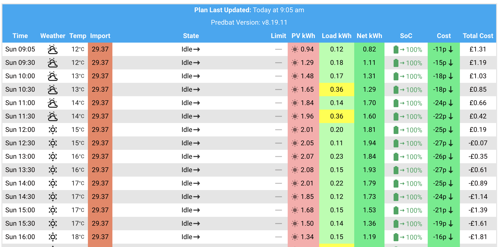
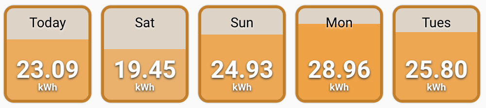

Predbat Plan card
Predbat can create its own plan card which can be added to your Home Assistant dashboard.
At a glance, the Predbat plan shows you the plan going forward for home demand, EV charging, iBoost and your battery, and any actions that Predbat is planning to take.
Displaying the Predbat plan
Firstly install the HTML template card in HACS:
- In HACS, click on Frontend
- Click the blue Explore and download repositories button and type 'HTML'
- Click on 'HTML Jinja2 Template card', then click the blue 'Download', then 'Download' again to install it
- When prompted to 'reload your browser', click 'Reload'
NB: Do not install the very similarly named 'Lovelace Html card', it won't work! You must install the 'HTML Jinja2 Template card'.
Next, on a Home Assistant dashboard, click the blue 'Add card', scroll down the list of cards to the bottom and click 'Manual', delete the template card configuration and copy/paste the following to display the Predbat plan:
type: custom:html-template-card
title: Predbat plan
ignore_line_breaks: true
content: |
{{ state_attr('predbat.plan_html', 'html') }}
You should see something like this:

If you get an error 'Custom element doesn't exist: html-template-card' then you've not installed the Jinja2 template card correctly from HACS.
Understanding the Predbat plan
For every period (slot) that Predbat has planned for (the forecast_hours setting in apps.yaml), the Predbat plan shows:
- The import rate in pence for that slot
- The export rate in pence for that slot
- What 'status' Predbat will be in (e.g. Charging, Discharging)
- Any limit applied (e.g. charging to 70%)
- Forecast Solar generation (from Solcast)
- Forecast house load (from your historical load data)
- Planned car charging (if car charging is configured in Predbat)
- Planned iBoost immersion heating (if iBoost is configured)
- What the battery SoC will be at the start of the slot
- The forecast cost for the half-hour slot
- A running total cost
- Forecast CO2 Carbon intensity and Carbon footprint emitted by the grid's electricity generation, and the direction of travel over the slot (if carbon forecasting is enabled)
Rate symbols (import and export):
- ? ⅆ - Rate that has been modified based on input_number.predbat_metric_future_rate_offset_import or input_number.predbat_metric_future_rate_offset_export
- ? ⚖ - Rate that has been estimated using future rate estimation data (e.g. Nordpool)
- = - Rate that has been overridden by the user's apps.yaml
- ± - Rate that has been adjusted with a rate offset in the user's apps.yaml
- $ - Rate that has been adjusted for an Octopus Saving session
- ? - Rate that has not yet been defined and the previous day's data was used instead
Battery SoC symbols:
- → - Current SoC expected to remain level
- ↘ - Current SoC expected to fall
- ↗ - Current SoC expected to rise
Cost symbols:
- → - Current cost expected to remain level
- ↘ - Current cost expected to fall (due to export)
- ↗ - Current cost expected to rise (due to import or standing charge)
Explaining each column in the Predbat plan in more detail:
-
Time - Predbat plans your home, solar and battery load in (by default) 30-minute slots, on the :00 and :30 minutes past each hour. The Predbat slots are therefore aligned to Octopus Agile slots or rate change times on any other tariff. The slot length defaults to being 30 minutes long, but can be changed by setting plan_interval_minutes in
apps.yaml. -
Import - The import rate for that time slot in pence.
The rate will be coloured Blue if the price is zero pence or negative, Green if the rate is less than the import rate threshold, Red if the rate is more than 1.5 times the import rate threshold, and Yellow if the rate is between 1 and 1.5 times the import rate threshold.
See the Predbat customisation guide for an explanation of the import rate threshold (and overriding it), but in essence Predbat will consider blue and green-coloured slots as preferred candidates for importing, yellow and red (higher rates) will not.
If battery charging is planned by Predbat for a particular slot, the import rate for that slot will be highlighted in bold text. -
Export - Similarly, the export rate for that time slot in pence.
The rate will be coloured White if the price is less than the export rate threshold, Yellow if it is more than the export rate threshold, and pale Red if the rate is more than 1.5 times the export rate threshold.
So in essence, Yellow and Red coloured export rates will be considered as priorities for exporting, and White will not.
If battery discharging is planned by Predbat for a particular slot, the export rate for that slot will be highlighted in bold text. -
State - Predbat's status controls whether the battery is charging, discharging to support house load (Demand mode), discharging and force exported, or being held at the current level.
Alongside the state is an arrow which points upwards if the battery SoC is increasing (i.e. charging), to the right if the battery SoC remains constant, or downwards if the battery SoC is decreasing (i.e. discharging).
If Predbat's plan has been over-ridden and the slot has been manually controlled to be a Charging slot, Discharging or Idle, then alongside the State and battery SoC arrow will be an upside down 'F' (ⅎ) indicating it is a 'Forced' activity.
The slot will be coloured Green for Charging, Yellow for Discharging, Silver Grey for Freeze Charging, Dark Grey for Freeze Discharging, Pale Blue for Hold Charging or White for Idle.
NB: The Predbat plan is shown in (by default) 30-minute time slots, but Predbat actually plans battery activity in 5-minute segments within the slot. If the Home Assistant control switch.predbat_calculate_export_oncharge is set to True, then within a slot (and depending on import and export rates), Predbat could potentially plan for there to be both charging and discharging activity - if Predbat plans this, the state will show as both Charging and Exporting in the same slot. -
Limit % - Alongside any battery activity (charging, discharging, etc) there will be a SoC limit. This limit is what the SoC is planned to be at the end of the slot. e.g. 'Charge↗ 70%' is charge to 70% SoC, and 'Exp↘ 4%' is force exporting the battery to the 4% reserve level.
If Predbat is planning a slow charge or slow export then the limit will be preceded by a snail symbol (🐌) and will be shown as 'limit.tens_of_percentage_rate_reduction'. e.g.: 16.3 means limit of 16% and charge/discharge at 70% of normal rate. -
PV kWh - The predicted solar forecast for the half-hour slot, estimated from the Solcast Forecast.
If the PV forecast is above 0.2kWh for the slot it will be coloured Melon Red with a little sun symbol, above 0.1kWh it will be Yellow with a sun symbol, otherwise, it will be Silver-Grey. -
Load kWh - The predicted house load for the half-hour slot, estimated as a weighted average of the number of days_previous Historical data from your inverter or other house load sensor.
If the load forecast is 0.5kWh or above for the slot it will be coloured Orangey-Red, from 0.25kWh to 0.5 it will be coloured Yellow, above 0 to 0.25, it will be Light Green, and if zero, it will be coloured White. -
Clip kWh - (Only shown if switch.predbat_plan_debug is turned on), shows the total amount of energy predicted to be lost due to clipping either due to your inverter not being able to handle all the PV that has been generated (due to lack of AC capacity or DC charging), or due to an export limit being set.
If the amount of solar clipping predicted to occur in that slot is more than 0.1kWh then the kWh will be coloured Orange, if its more than 0.01kWh it will be coloured Yellow, otherwise, it will be White. -
Xload kWh - (Only shown if switch.predbat_plan_debug is turned on), shows the load that was added externally to Predbat with load_forecast settings, this might come from PredAI, PredHeat or other sources depending on your configuration.
-
Car kWh - The total predicted car charging for the half-hour slot. This column will only be shown if num_cars in
apps.yamlis 1 or more.
If the car is planned to be charged in that slot then the kWh will be coloured Yellow, otherwise, it will be White. -
iBoost kWh - The energy planned for solar diverter immersion heating such as iBoost or MyEnergi Eddi. This column will only be shown if switch.predbat_iboost_enable is set to True.
If the solar diverter is planned to be on in that slot then the kWh will be coloured Yellow, otherwise it will be White. -
SoC % - The estimate of battery State of Charge percentage at the start of the time slot together with an arrow pointing up, to the right or downwards to indicate whether the battery SoC is increasing, remaining constant or decreasing during the time slot.
The 'SoC %' can be read in conjunction with the 'Limit %'; the SoC column gives the estimated SoC at the beginning of the slot, the Limit column the estimated SoC at the end of the slot.
If the SoC is 50% or greater it will be coloured Green, 20% or greater, Yellow, and if less than 20%, Orangey-Red. -
Cost - The estimated cost in pence for the time slot together with an arrow indicating whether the total cost today is increasing, staying flat or decreasing.
If the cost for the slot is 10p or more it will be coloured Orangey-Red, ½p or more it will be coloured Yellow, -½p or less it will be coloured Green, otherwise, it will be coloured White. -
Total - The total cumulative cost so far for 'today' at the start of the slot, including the standing charge. At midnight tonight this cumulative cost will be reset to the daily standing charge (or zero if metric_standing_charge wasn't set in
apps.yaml).
Due to the way Predbat works, the total cost is always reported (in Predbat output entities, this HTML plan, in the Apex charts, etc) as starting from midnight today and adding on from there.
Looking at the sample Predbat plan above as an example, the plan starts at 10:00 with the total cost today already being £3.13. The house load is then fully met through the day and evening by the battery (with some PV top-up charging) so the total cost remains constant at £3.13.
In the 22:30 and 23:00 slots there is a little grid import, and then at 23:30 there's grid import and the battery starts to be charged. As you can see the Total continues to increase in the plan past midnight with each Total being the Total from the preceding slot plus the Cost estimate from the preceding slot - a reminder that Total gives the running total at the start of the slot.
The total cost is always coloured White. -
CO2 (g/kWh) - The estimated CO2 Carbon intensity emitted by the grid when generating electricity at the start of the slot. This column will only be shown if switch.predbat_carbon_enable is set to True.
The CO2 value will be coloured according to how high the carbon footprint intensity is: greater or equal to 450g/kWh it will be deep red; greater or equal to 290, dark red; then golden orange from 200 upwards; yellow from 120; green from 40 and light green if less than 40. -
CO2 (kg) - The estimated CO2 Carbon footprint that the grid will emit generating electricity at the start of the slot and the direction of travel over the slot. This column will only be shown if switch.predbat_carbon_enable is set to True.
The carbon amount in kg will be coloured according to the direction of travel over the slot; if the carbon value rises by 10kg or more it will be orange with an upward arrow; if falling by 10kg or more it will be green with a downwards arrow, and in the middle, white with a horizontal arrow.
Debug mode for Predbat Plan
If Predbat expert mode is turned on then a number of additional controls and switches are made available in Home Assistant.
If switch.predbat_plan_debug is then turned on then the Predbat plan shows additional 'debugging' information for the import rate, export rate, load and PV columns, and the clip kWh column described above.
The Predbat plan will now look like this with plan_debug turned on:

Import and Export rates will now show the actual rate (according to how you have set up the energy rates) and also in brackets the effective import or export rate.
The effective rate takes into account battery and inverter energy losses for charging and discharging and converting from DC to AC and vice-versa. Note that the Cost and Total columns are always based on the actual Import and Export rate.
Using the above debug plan as an example:
-
At 22:30 the battery is being charged. The actual import rate is 14.07p, but after conversion losses to store the grid AC into the DC battery, the energy being put into the battery has effectively cost 14.81p - for every 1kWh of AC grid import you don't get 1kWh of DC stored in the battery, so 1kWh of battery charge has effectively cost slightly more than the import rate.
-
At 00:30 the battery is being force exported and excess energy (above the estimated house load of 0.47kWh) will be exported. The actual export rate is 18.22p but after losses converting the stored DC battery charge into AC to supply the home and export it, the energy being exported has effectively only earned 17.31p - it will take slightly more than 1kWh of stored DC battery charge to get 1kWh of AC to use or export so each discharged and exported kWh earns slightly less.
-
Putting these together, at 00:00, the effective import rate (after losses) is 13.93p, the effective export rate is 17.31p, so even though battery and inverter conversion losses have been incurred, there is still a 3.38p profit per kWh and Predbat plans to charge and then export the battery in the same slot to generate that profit.
With debug mode turned on, the Load column shows the predicted load in kWh for the half-hour slot and in brackets the modelled load variance value using the load variance model.
The PV column in debug mode changes shows the predicted PV generation in kWh for the half-hour slot and the Solcast 10% forecast in brackets. Note that Predbat's forecasted PV generation already contains a input_number.predbat_pv_metric10_weight weighted value of the Solcast 10% forecast.
Note that the values in brackets in the load and PV columns are each only shown if they are non-zero.
The debug mode on the Predbat plan can be quite useful to understand from the import and export rates after conversion losses, why Predbat plans to charge or force export the battery. There's a further explanation of the Predbat forecast and plan in the FAQ's.
Customising and Reformatting the Predbat Plan
An additional independent front-end Home Assistant component the 'Predbat Table Card' is available on HACS that gives a number of additional customisation and configuration options to tailor how the Predbat plan looks and is highly recommended if you want to change the standard plan look and feel:
- Change the sequence of columns and which columns are shown in the plan
- Restyle the columns, or retain the Predbat original colour scheme
- Easily change Predbat's planned activity for a slot by clicking on the slot time, then selecting Demand, Charge, Export, Freeze Charge or Freeze Export
- Apply custom light/dark themes
- Show the weather forecast alongside the plan
- Display different columns for different screen widths, e.g. less detail on a phone, more on a tablet/PC

See the Predbat Table Card repository for more details.
PV Prediction summary
The same author of the Predbat Table Card has produced a nice visualisation for the Solar Forecast for the next few days:

See the PV Card Preview repository